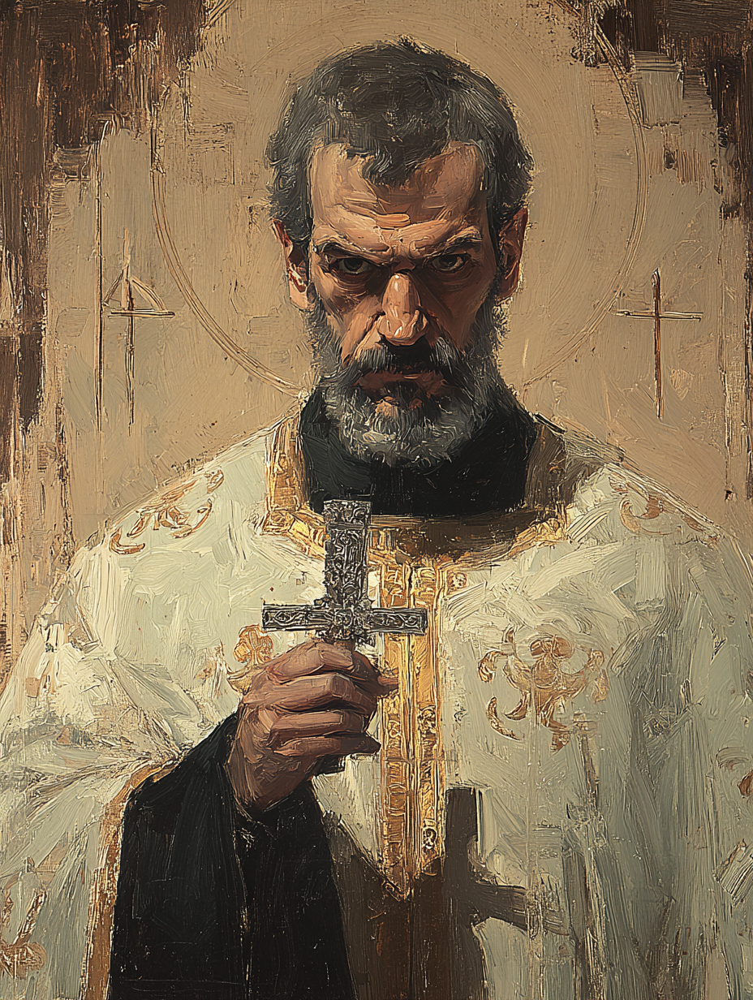

Father Leonidas
Greek Orthodox Priest · Realitymender Domain

Greek · Aged Fifty-One
On the Subject
A Greek Orthodox priest dedicated to preserving the fabric of reality itself, Father Leonidas hunts rogue spellcasters whose careless magic threatens to crack open Constantinople's delicate weave. His sermons in the city's Greek quarter are as much warnings against magical hubris as they are matters of faith.
Though calm in demeanor and a stabilizing presence in any crisis, those who have seen him confront a heretic mage describe a different man entirely — one who moves with the certainty of someone who has done this many times before.
Faculties & Saving Throws
Base array 16, 14, 14, 14, 12, 8; Human +1 to each
Bearing in the Field
Skills
| Skill | Bonus | Source |
|---|---|---|
| Arcana | +3 | Realitymender |
| History | +3 | Cleric |
| Insight | +5 | Acolyte |
| Medicine | +5 | Human |
| Nature | +3 | Realitymender |
| Persuasion | +4 | Cleric |
| Religion | +3 | Acolyte |
Class Features
Turn Undead, or — at Realitymender Domain — Execute the Otherworldly.
Can cast known or prepared Cleric spells with the ritual tag without expending a slot.
Detect magic, identify.
Reaction to add 1d6 to a failed Arcana, Religion, Nature, or History check, potentially turning failure into success. Advantage on saves against Spell Rebound Effects.
When a spell is cast within 60 ft., use reaction to make an attack roll (melee, ranged, or cantrip spell attack) against the caster. On hit: +3 radiant damage (Wis mod).
Present holy symbol; target one aberration, celestial, djinn, elemental, fey, fiend, or undead in sight. Charisma save vs DC 13. On a failure: marked for 1 minute — disadvantage on saves vs your spells, you have advantage on spell attacks against it, and it takes +3 radiant damage when damaged.
Spells
6 prepared (Wis +3 + Cleric level 3), plus 2 always-prepared Domain spells
- Sacred Flame
- Guidance
- Thaumaturgy
| Lvl | Spell | Source | Notes |
|---|---|---|---|
| 1st | detect magic | Domain | Concentration, 10 min |
| 1st | identify | Domain | Ritual |
| 1st | bless | Prepared | Concentration |
| 1st | shield of faith | Prepared | Concentration; +2 AC to ally |
| 1st | protection from evil and good | Prepared | Concentration; anti-djinn |
| 2nd | Detect Djinn | Prepared (CoC) | Ritual; concentration |
| 2nd | silence | Prepared | Concentration; counter-caster |
| 2nd | spiritual weapon | Prepared | Bonus action; no concentration |
Feat
Advantage on Constitution saves to maintain concentration on spells. Can perform somatic components of spells with hands full (holy symbol and weapon, etc.). When a hostile creature provokes an opportunity attack, can cast a single-target spell with a 1-action casting time at it as the reaction instead.
Background — Acolyte
He and his companions receive free healing, care, and modest aid at temples and shrines of his faith — Greek Orthodox.
Equipment
- Mace — 1d6 bludgeoning, simple; +1 to hit / 1d6 −1 damage
- Light crossbow + 20 bolts — 1d8 piercing, range 80/320; +4 to hit / 1d8 +2 damage
- Buff coat — light armour (City of Crescent); AC 13 + Dex max 2; −1 damage from firearms; 40 gp; a heavy leather coat worn over his cassock
- Shield — available, not currently equipped; would raise AC to 16
- Silver Cross — pectoral cross worn at the throat; non-magical; his divine focus and a piece of personal identity
- Priest's pack — backpack, blanket, 10 candles, tinderbox, alms box, 2 blocks of incense, censer, vestments, 2 days rations, waterskin
- Prayer book
- 5 sticks of incense
- Vestments
- Common clothes
Personality
I have spent so long in study that I am awkward in social situations beyond the pulpit, where I am unshakeable.
Reality is a fragile vessel. The rules that hold it together must be defended, even when defending them is unpopular.
The fabric of the world was wounded by reckless mages once before — within my lifetime. I will not allow it again.
I see arcane corruption in places where it may not actually be. My certainty has cost innocent people their reputations.
Connections
- Often exchanges letters with Osman Hamdi Bey on historical and theological matters.
- Collaborated with Ayla Sürgün during an investigation involving magical artifacts in the city.
His calm demeanor and ability to restore order in crises make him a stabilizing presence on the expedition.